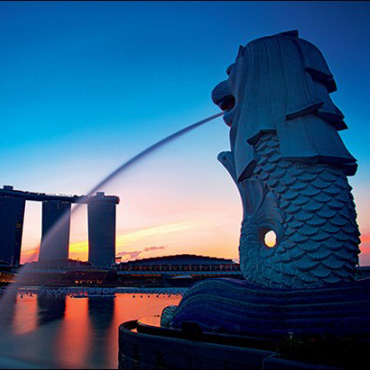
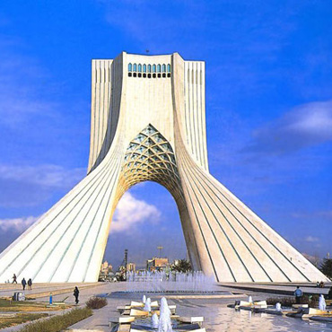
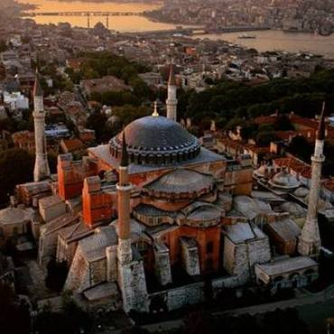

Singapore is located in the southern tip of the Malay Peninsula, Malacca Strait entrance, is a tropical maritime climate, perennial high temperature and rainy. Singapore is beautiful and evergreen, and the island is full of trees and trees, known for its cleanliness and beauty. National arable land few, the population living in the city, so called "city country".
China is building a new economic strategy - the Maritime Silk Road is an extension of the Silk Road on the land, also known as the spice of the road, the ceramic road, formed in the Qin and Han Dynasties.Maritime Silk Road starting point is located in Quanzhou, Fujian Province, China, the main reason is because the southeast coast of China more than plain plains, and internal exchanges are not easy, so many people since ancient times to actively develop to the sea.But also to solve the inconvenience of the land, because the land affected by topography, Western will go through many areas less suitable for human habitation, and the east coast of China in summer and winter monsoon aids, and therefore increase the access by sea continental convenience.Maritime Silk Road is the ancient sea traffic arteries, not only transport silk, but also transport porcelain, sugar, hardware and other export goods, and spices, herbs, precious stones and other imported goods, ceramics as the main export items.
Along the country

Singapore

Yemen
Yemen is located in the southwest of the Arabian Peninsula, adjacent to Saudi Arabia, Oman, the Red Sea, the Gulf of Aden and the Arabian Sea.Yemen has a history of more than 3,000 years of writing, is one of the cradles of ancient Arab civilization. Yemen is one of the least developed countries in the world. In the summer there are common sandstorms in the desert, and due to overgrazing, desertification is becoming increasingly serious.
Kenya
Kenya is located in the eastern part of Africa, the equator across the central, east rift valley across the north and south. 18% of the land area is arable land, the rest is mainly suitable for animal husbandry.Kenya is a potential market, the Kenyan government in the 2030 vision, the energy, infrastructure and construction, agriculture, manufacturing, mining, tourism, wholesale and retail, financial services and information industries and other columns Focus on the development of the field.

Turkey
Turkey across Asia, Europe and two continents, located between the Mediterranean and the Black Sea.The Bosphorus and the Dardanell Strait and the Margaret Sea between the two straits are the only waterways to communicate the Black Sea and the Mediterranean. The strategic location is very important.Terrain east high west low, most of the plateau and mountain, only coastal plains.Inland plateau to the tropical grassland and desert climate transition.
Italy
Italy is located in southern Europe, the land area of about 30.1 million square kilometers. The coastline is about 7200 kilometers long. The whole territory 4/5 for the hills. There are the Alps and the Apennines. Italian and French border Mont Blanc at 4810 meters above sea level, ranking second in Europe; the famous Vesuvius volcano and Europe's largest active volcano - Etna volcano. The largest river is the river.Most areas are subtropical Mediterranean climate.
Thailand
The kingdom of Thailand is a constitutional monarchy in Southeast Asia. Located in the central peninsula. Thai name Siam, May 11, 1949, the Thai people with their own national name, the "Siam" to "Thai", mainly to take its "free" meaning. Thailand is one of the world's most famous tourist destinations. Is the kingdom of Buddhism, most of the Thai people believe in four Buddha. Buddhists account for more than 90% of the population.